| # | 测试项 | 状态 | 详情 |
|---|---|---|---|
| 1 | 主对话流式输出 | PASS | 思考过程可见 (thinking refs=1)，Agent 正确回答 "2+3=5"，Assistant 消息块渲染正常 |
| 2 | 技能选择与加载 | PASS | 技能弹窗正常弹出，agent-browser 技能 checkbox 勾选成功，Agent 响应中包含浏览器技能引用 |
| 3 | 新建会话 Tab (🦜 Agent) | PASS | 🦜 Agent Tab 点击后正常打开，发送消息后 Agent 响应 (bodyLen=1923)，流式输出证据可见 |
请用中文回答：2+3等于多少？请先思考再回答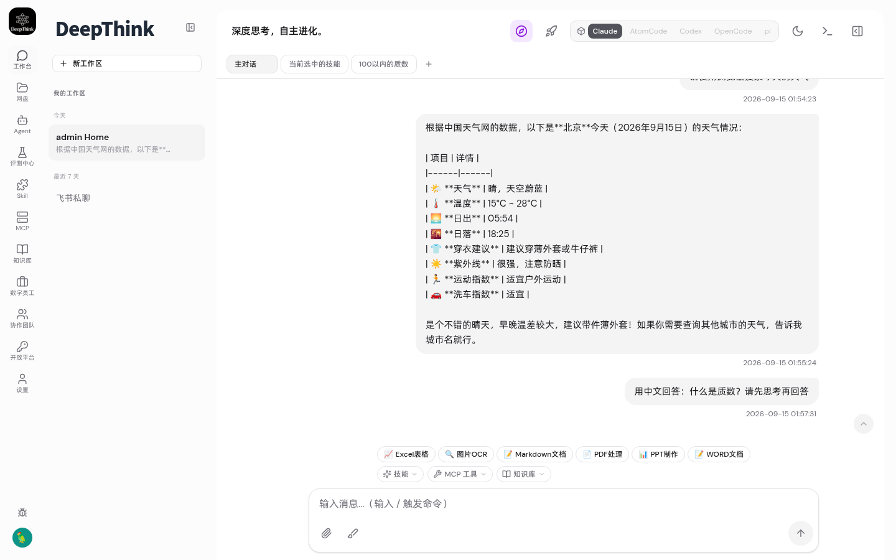
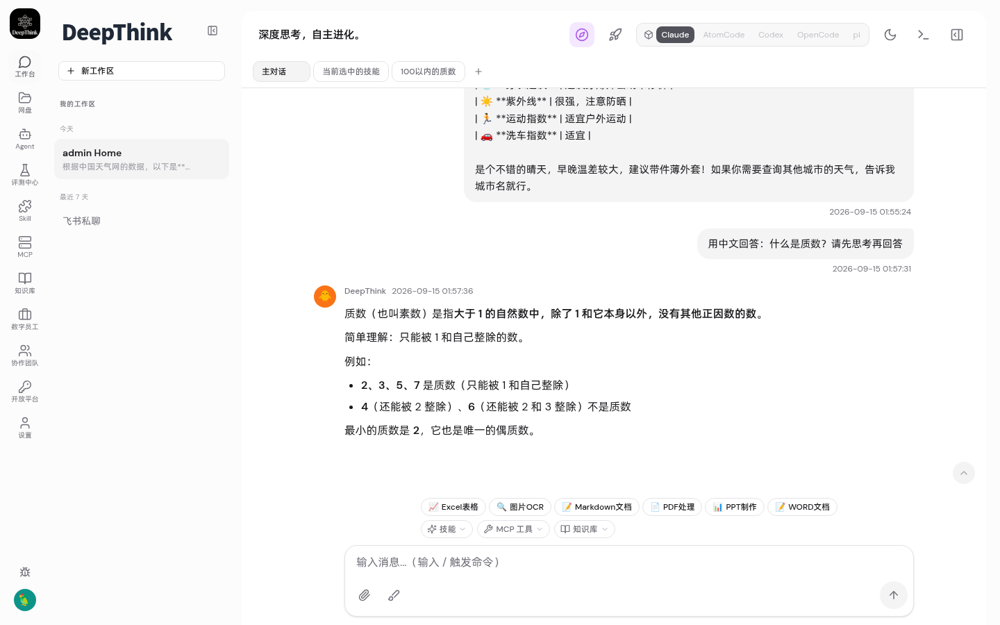
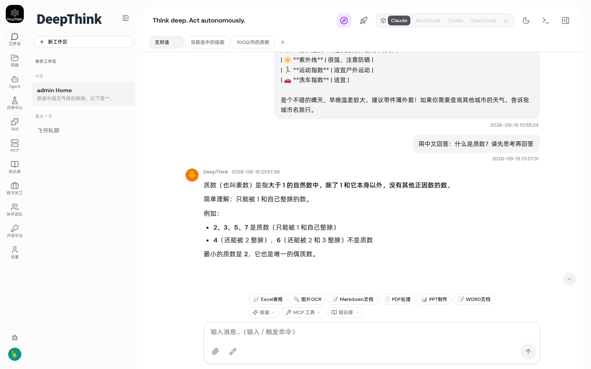
请使用浏览器搜索今天的天气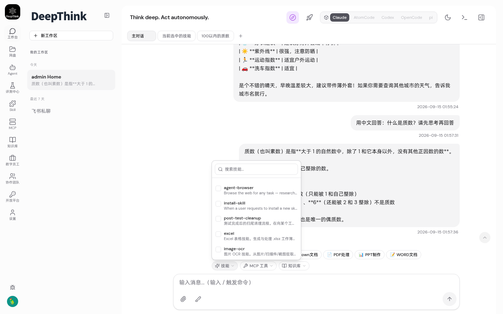
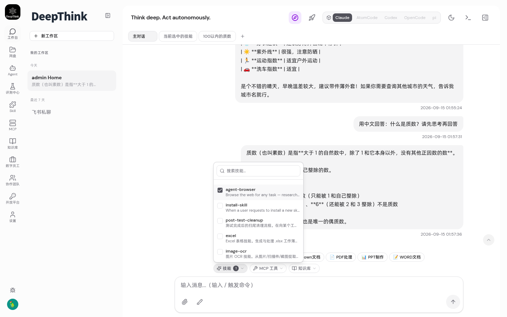
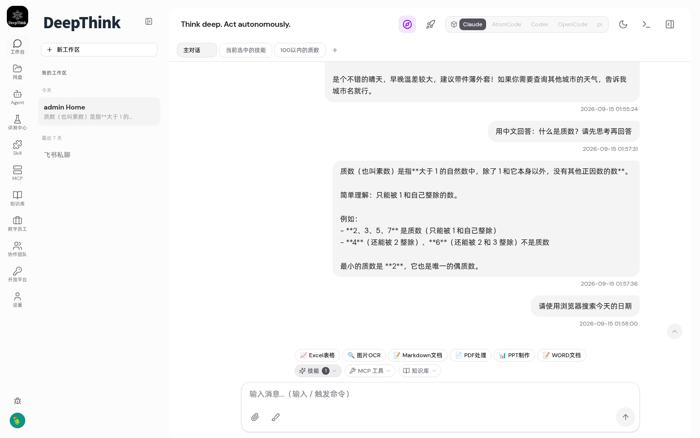
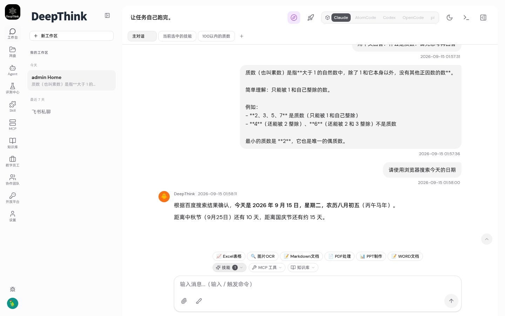
用一句话介绍你自己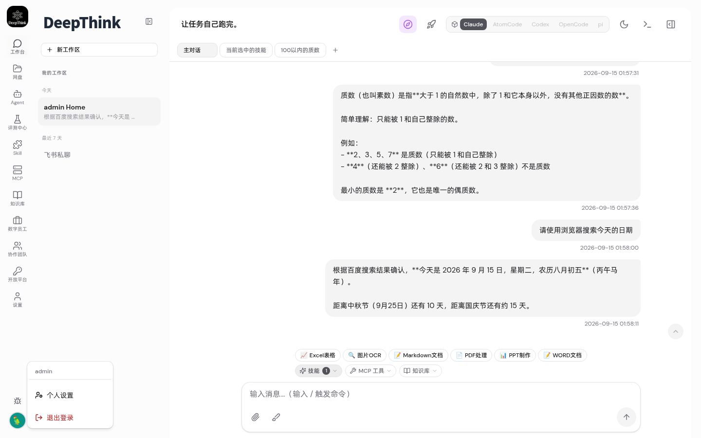
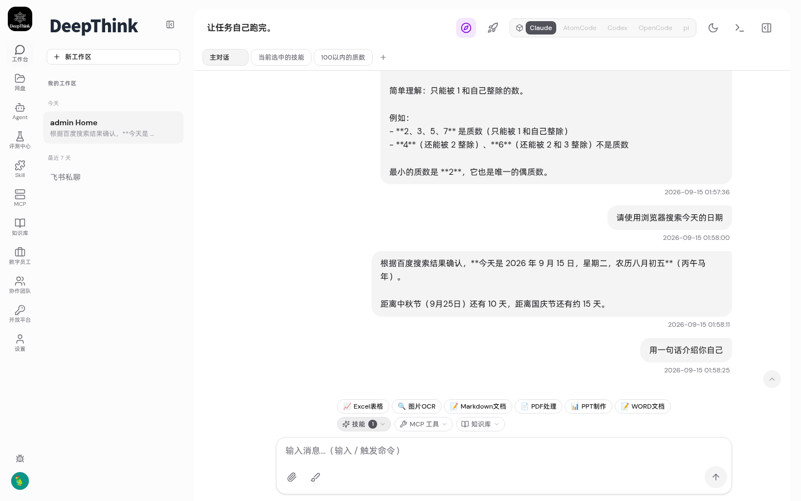
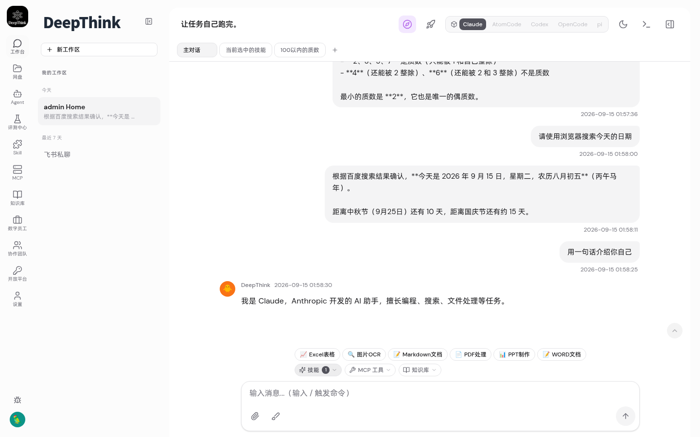
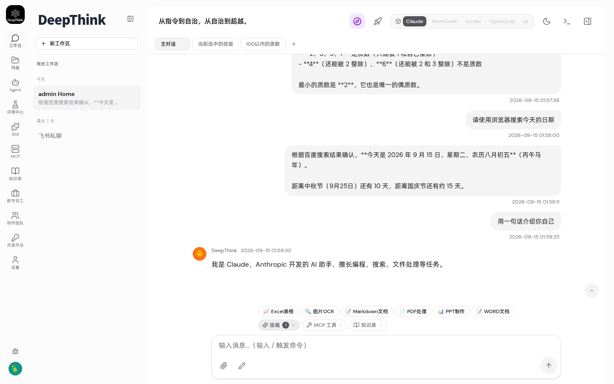
| 文件 | 修改内容 | 修复的 Bug |
|---|---|---|
src/index.ts |
agent conversation stream handler 添加 persistTraceNodeFromStreamEvent |
Bug 1: 流式输出缺失 |
src/index.ts |
processAgentConversation 添加分布式调度 (isRedisConnected + publishAgentTask) |
Bug 2: 新建会话 Tab 无响应 |
container/agent-runner/src/trace-node-allocator.ts |
添加 seedBase() 方法 |
Trace Node ID 碰撞 (辅助) |
container/agent-runner/src/types.ts |
ContainerInput 添加 traceNodeIdBase |
Trace Node ID 碰撞 (辅助) |
src/db.ts |
添加 getMaxChatTraceNodeId() |
Trace Node ID 碰撞 (辅助) |
src/container-runner.ts |
传递 traceNodeIdBase 到 agent-runner |
Trace Node ID 碰撞 (辅助) |
| 项目 | 详情 |
|---|---|
| 部署环境 | K8s kind 集群 (desktop-worker) |
| URL | http://192.168.1.25:30080 |
| deepthink pods | 2 replicas (Running) |
| agent-runner pods | 2 replicas (Running) |
| Redis | redis:7-alpine (Running) |
| PostgreSQL | pgvector/pgvector:pg16 (Running) |
| 浏览器 | Google Chrome 1440×900 headless |
| 测试框架 | Playwright Core |
3/3 测试全部通过。两个核心 Bug 已在 K8s 分布式环境中验证修复：